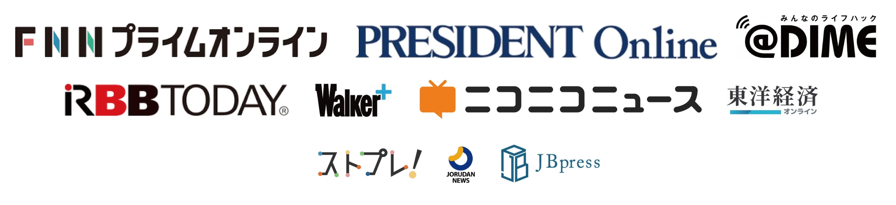
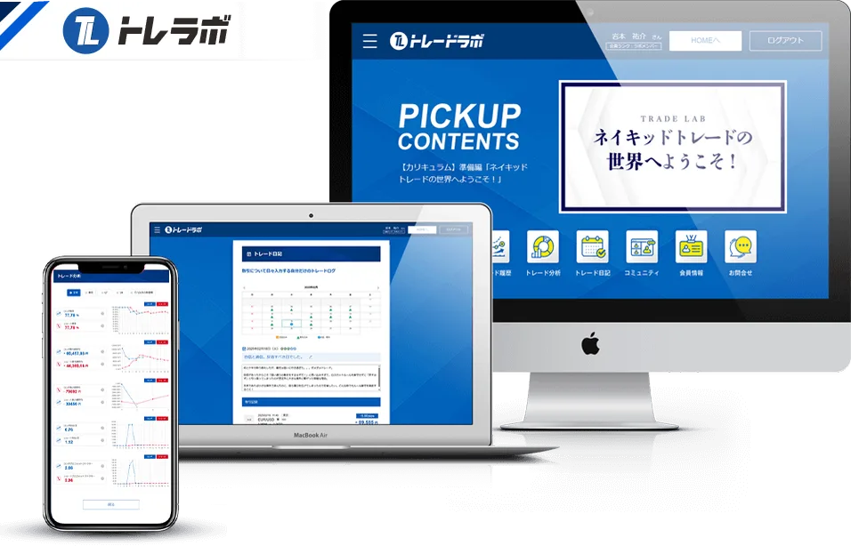
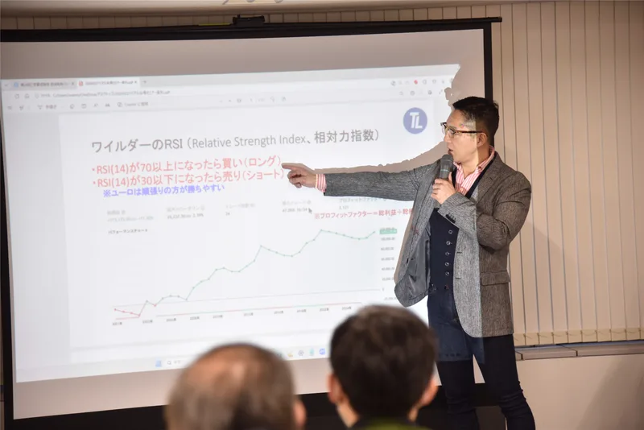
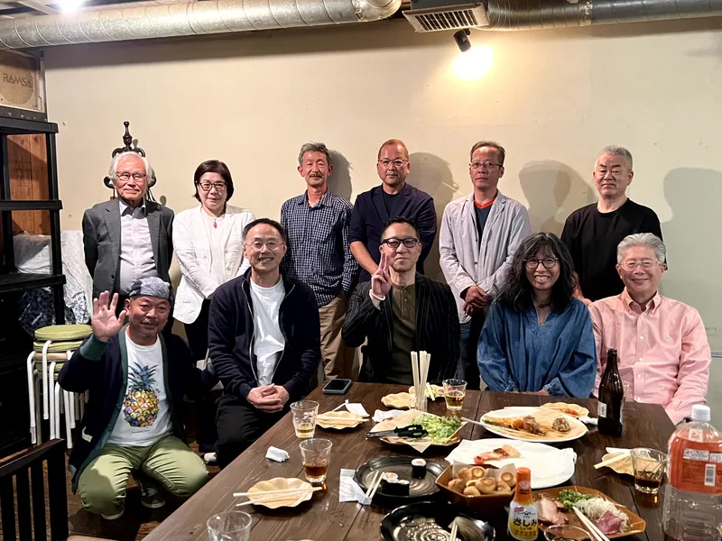
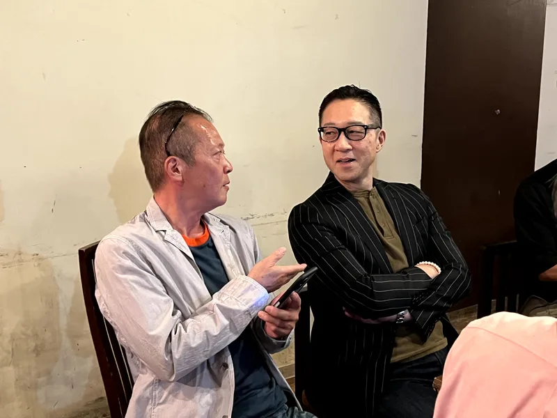
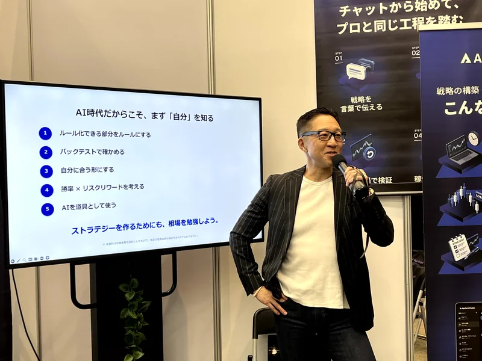
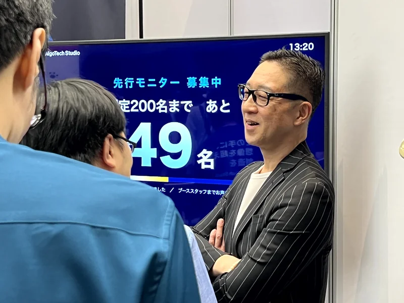
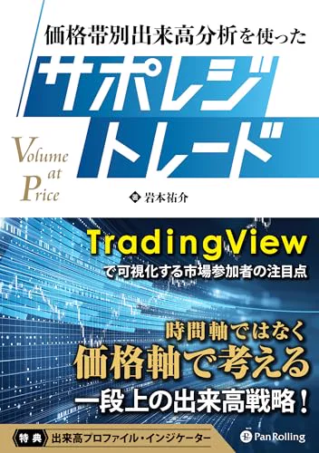

まずは無料ビデオ講座から
トレードLabで学ぶ「ネイキッドトレード」の考え方を、全4回の無料ビデオ講座「ディープインサイド」でお伝えしています。メールアドレスをご登録いただくと、すぐにご覧いただけます。
＼メール登録で特典プレゼント中／
無料ビデオ講座を受け取る証券・投資・トレーダー歴40年の
講師・岩本祐介から
＼メール登録で特典プレゼント中／
無料ビデオ講座を受け取る
※掲載はプレスリリースの転載を含みます。
FXのトレードを基礎から学び、実践を通じて判断力を身につけていく、オンラインスクールです。
「ネイキッドトレード」という手法や、大きく負けないための「リスクコントロール」の考え方を、6ヶ月を通じて学んでいきます。
ビデオ講座に加え、勉強会やライブ配信、会員同士のグループチャットなど、講師や仲間と交流しながら理解を深められる機会も充実。
一人で悩み続けるのではなく、継続的な学びを通じてトレードと向き合うための環境です。

勝率69.63%
| 年 | 獲得pips | 回数 | 勝率 |
|---|---|---|---|
| 2023年（9〜12月） | 390.9pips | 84回 | 66.67% |
| 2024年 | 520.2pips | 205回 | 69.76% |
| 2025年 | 359.0pips | 130回 | 79.23% |
| 2026年（1〜3月） | 95.7pips | 38回 | 84.21% |
| 獲得pips | トレード回数 | 勝率 |
|---|---|---|
| 1,365.8pips | 457回 | 69.63% |
※上記は講師の過去のトレード実績であり、将来の成果を保証するものではありません。
※負け数には引き分け（同値撤退）を含みます。2025年は3月・5月・6月など、トレードを休んだ月があります。
※実際の成果には個人差があり、同様の利益や効果を保証するものではありません。
トレードLabで学ぶ会員の皆様に、始めたきっかけや、
学びを通じて感じた変化についてお話を伺いました。
 「大きく勝つより、まずは減らさない」投資初心者が少額トレードで目指す堅実なFXへの第一歩
投資初心者
「大きく勝つより、まずは減らさない」投資初心者が少額トレードで目指す堅実なFXへの第一歩
投資初心者
 FX初心者×歴10年 2人が感じた手応え
FX初心者／FX歴10年
FX初心者×歴10年 2人が感じた手応え
FX初心者／FX歴10年
 目標は住宅ローン完済！FXで再スタートを決意
FX経験者
目標は住宅ローン完済！FXで再スタートを決意
FX経験者
※個人の感想であり、成果を保証するものではありません。
トレードLabでは、動画で学ぶだけでなく、講師や仲間と直接交流できる機会も大切にしています。
実際の相場をもとにした実践形式の勉強会を月1回以上開催。会場・オンラインの両方に対応しており、参加費は無料です。
2026年2月には東京で、10月には大阪で会員向けセミナーと懇親会を開催。講師への直接質問や、仲間との情報交換を通じて、学びを深められる場を設けています。






トレードLabで学ぶ「ネイキッドトレード」の考え方を、全4回の無料ビデオ講座「ディープインサイド」でお伝えしています。メールアドレスをご登録いただくと、すぐにご覧いただけます。
＼メール登録で特典プレゼント中／
無料ビデオ講座を受け取る